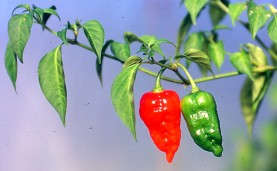

Napalm is the generic name for the mixture of a flammable petroleum substance, typically diesel gasoline, with a thickening or gelling agent to give the fiery substance “sticky” properties. Napalm-like fiery substances have been used since early Greek times for war purposes (they called it “sticky fire”). Napalm as we know it today, was developed at a secret Harvard University laboratory in 1942 and was intended to be used as an incendiary device for buildings and structures. However, more recently Napalm was used as an incendiary substance that sticks readily to victims prolonging the burn, and damage, to the victim and proved especially effective against dug-in enemy personnel (the use of napalm is forbidden by modern-day “rules” of war). For more peaceful purposes, napalm can be used in animal traps and to focus a burn on a given area for a prolonged period of time (for instance, to kill certain crops by burning off their seeds). It can even be used as a cutting device in a survival situation.
There are several different types of modern-day Napalm mixtures, including Napalm-B, the more modern version of napalm. Commercial versions are typically formulated from hard-to-find agents such as naphthenic acid and palmitic acid (hence the name: naphthenic + palmitic) but homemade versions of Napalm are fairly easy to mix.
Remember, this is “napalm” and as such, includes all the dangers inherent with other flammable substances with the added dangers that (1) it sticks to you, (2) it produces unhealthy, toxic smoke and fumes. In other words, the substance is very dangerous – handle with care (the heat from this napalm is so hot, if you burn it on an asphalt street, it will leave a hole in the street surface).
Source: https://www.wildernessarena.com/supplies/weapons/homemade-napalm-recipe